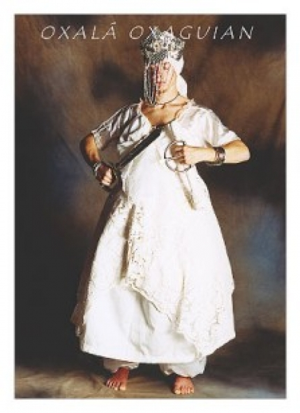

Jonville,Quarta-feira, 27 de Fevereiro de 2013

Osalá foi consultar os adivinhos para saber como conduzir melhor sua vida. Os velhos aconselharam-no a oferecer aos outros deuses uma cabaça grande cheia de sal e um pedaço de pano, para não passar vergonha na terra. Osalá como era muito teimoso, deu de ombros aos conselhos e foi dormir sem cumprir o recomendado. Durante a noite, Esú entrou em sua casa trazendo uma cabaça cheia da sal, amarrando-a às costas de Osalá, que jazia em profundo sono. Na manhã seguinte, Osalá despertou corcunda e desde então tornou-se o protetor dos corcundas, albinos, aleijados e lhe foi proibido o consumo de sal.
Osalufan, rei de Ifan, tinha decidido fazer uma visita a Sango, rei de Oyo, seu vizinho e amigo. Osalufan consultou um Babalaô, para saber se sua viagem se faria em boas condições. O Babalaô respondeu que a viagem seria muito penosa, que teria numerosos revezes e que, se não quizesse perder a vida, não deveria recusar os serviços que lhe fossem pedidos, nem reclamar das conseqüências que disso resultassem. Deveria, também levar três roupas brancas para trocar. Osalufan se pôs a caminho. Encontrou, logo depois, Esu sentado à beira da estrada com um barril de azeite de dendê a seu lado. Esu pediu a Osalufan que o ajudasse a colocar o barril sobre a sua cabeça. Osalufan concordou e Esu, maliciosamente, derramou o conteúdo do barril sobre Osalufan. Este não reclamou, lavou-se no rio próximo, e pôs uma roupa nova. Continuou a andar com esforço e foi vítima, ainda por duas vezes, de tristes aventuras com Esu, com carvão e com óleo de amêndoa de palma. Osalufan, sem perder a paciência, lavou-se e trocou de roupa após cada experiência.
Quando tentava amansá-lo com a intenção de levá-lo a seu senhor, os servidores de Sango, que estavam à procura do animal, chegaram correndo e, pensando que o velho era um ladrão, jogaram-no na prisão. Sete anos de infelicidade se abateram sobre o reino de Oyo. Sango, tendo consultado um Babalaô soube que toda esta desgraça vinha da injusta prisão de um velho homem. Osalufan foi então levado à sua presença e ele reconheceu o amigo. Sango, desesperado, pediu-lhe perdão e deu ordem a seus súditos para que fossem todos, vestidos de branco e guardando silêncio em sinal de respeito, buscar água três vezes seguidas a fim de lavar Osalufan Osalufan voltou em seguida a Ifan, passando por Ejigbo para visitar o seu filho Osogyian que, feliz por rever o seu pai, organizou grandes festas com distribuição de comidas a todos oshabitantes do lugar.
Osalufan, rei de Ifan, tinha decidido fazer uma visita a Sango, rei de Oyo, seu vizinho e amigo. Osalufan consultou um Babalaô, para saber se sua viagem se faria em boas condições. O Babalaô respondeu que a viagem seria muito penosa, que teria numerosos revezes e que, se não quizesse perder a vida, não deveria recusar os serviços que lhe fossem pedidos, nem reclamar das conseqüências que disso resultassem. Deveria, também levar três roupas brancas para trocar. Osalufan se pôs a caminho. Encontrou, logo depois, Esu sentado à beira da estrada com um barril de azeite de dendê a seu lado. Esu pediu a Osalufan que o ajudasse a colocar o barril sobre a sua cabeça. Osalufan concordou e Esu, maliciosamente, derramou o conteúdo do barril sobre Osalufan. Este não reclamou, lavou-se no rio próximo, e pôs uma roupa nova. Continuou a andar com esforço e foi vítima, ainda por duas vezes, de tristes aventuras com Esu, com carvão e com óleo de amêndoa de palma. Osalufan, sem perder a paciência, lavou-se e trocou de roupa após cada experiência.
Quando tentava amansá-lo com a intenção de levá-lo a seu senhor, os servidores de Sango, que estavam à procura do animal, chegaram correndo e, pensando que o velho era um ladrão, jogaram-no na prisão. Sete anos de infelicidade se abateram sobre o reino de Oyo. Sango, tendo consultado um Babalaô soube que toda esta desgraça vinha da injusta prisão de um velho homem. Osalufan foi então levado à sua presença e ele reconheceu o amigo. Sango, desesperado, pediu-lhe perdão e deu ordem a seus súditos para que fossem todos, vestidos de branco e guardando silêncio em sinal de respeito, buscar água três vezes seguidas a fim de lavar Osalufan Osalufan voltou em seguida a Ifan, passando por Ejigbo para visitar o seu filho Osogyian que, feliz por rever o seu pai, organizou grandes festas com distribuição de comidas a todos oshabitantes do lugar.
Copyright © 2011- Todos direitos reservados à ACCAIA
Rua Arildo Jose da Silva,99 - Itinga Joinville - SC - Cep: 89245000
::: Suporte 04791261971 :::
Editor on line